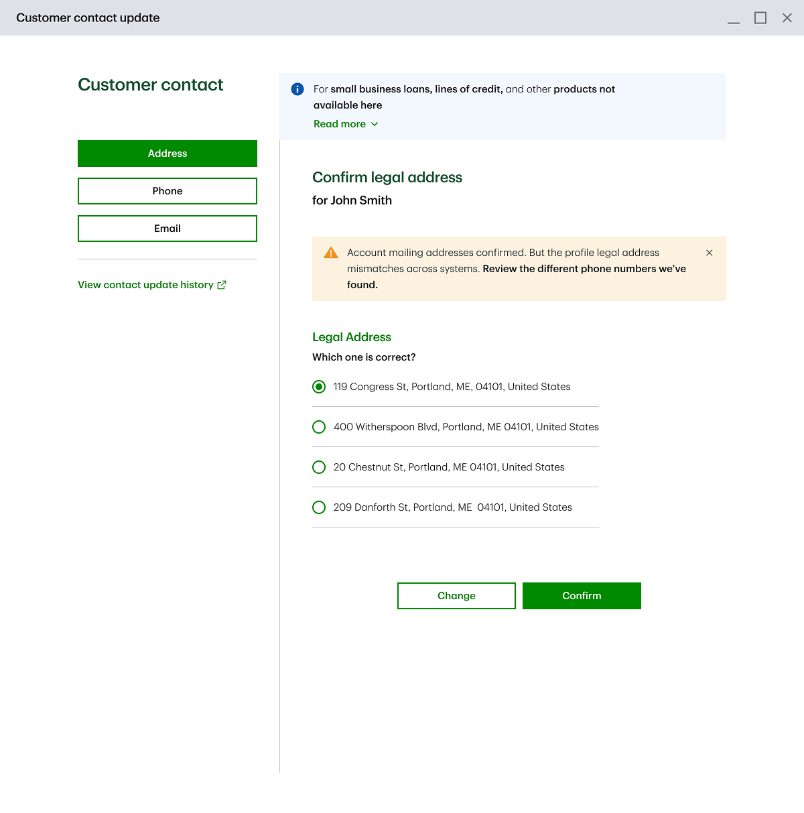
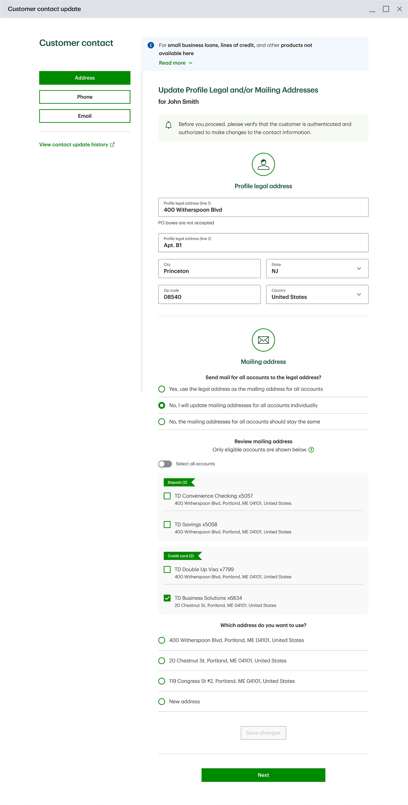
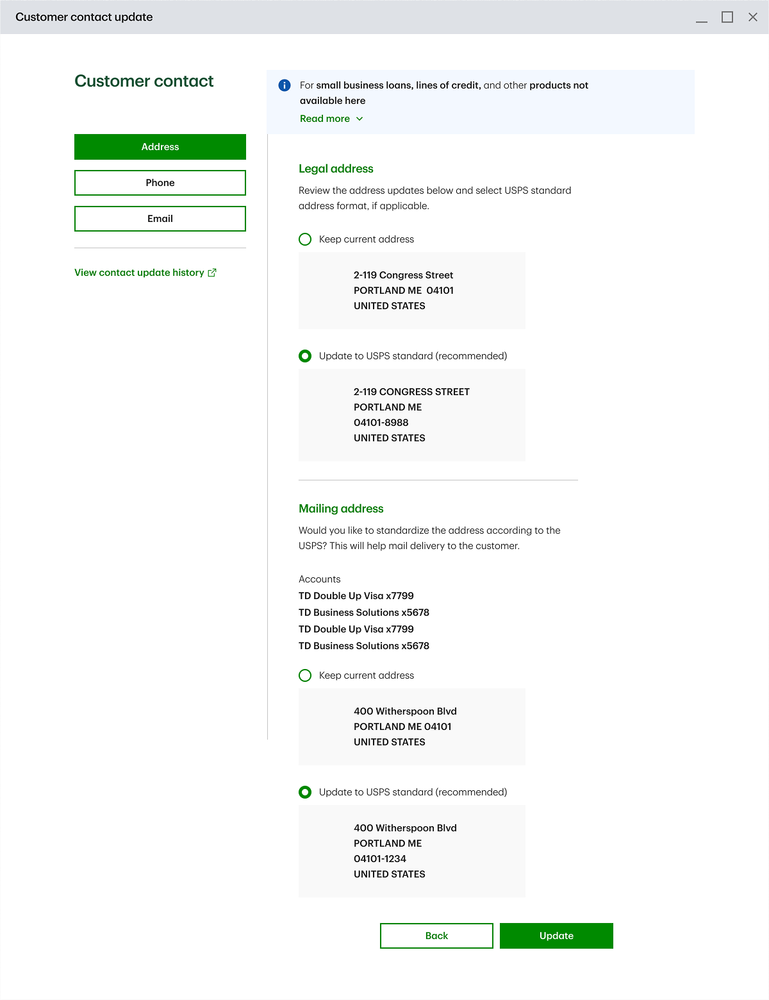
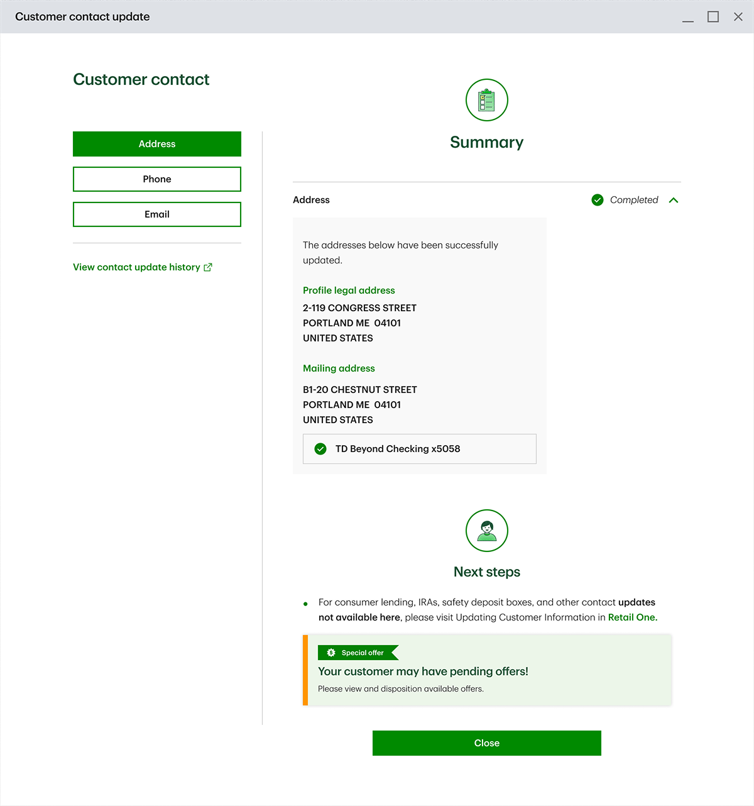

TD's first contact-update experience built around the customer instead of the product — a colleague experience that replaces a multi-call process with one interaction, now live across 1,000+ U.S. branches and the contact-center network.
Contact info lived with the product, not the customer
The data was managed at the product-level, not profile-level. Each product — deposit account, credit card... — kept its own data, managed by product-specific call centers.
The agent servicing the customer couldn't make the change themselves, they needed to call a second agent to make the change. Separate calls per product.
Walk into the branch
Loops in a second agent
Update made
Still at the counter
Loops in a third agent
Update made
Walk into the branch
Loops in a second agent
Update made
Still at the counter
Loops in a third agent
Update made
Catching conflicts before they become rework
MVP1 proved the concept for deposit accounts only. MVP2 — my work — added the second product, credit cards. Becoming the first time that multiple products could be updated in one place (the reason this app was built for).
Adding a second product surfaced a new problem — MVP1 didn't support a scenario to keep contact details consistent across products when the customer didn't ask for it.
"How do we let an agent resolve conflicting contact info across a customer's products — even when the customer didn't ask about it — without adding friction to a task they perform dozens of times a day?"
A feature ships, a foundation compounds
Beyond adding a new product to the existing journey, we were designing the foundation why this app was built for — an experience capable to let the bank's front-line agents make all the changes in one place.
Design for re-use
I designed the patterns so any future product can join the same journey — with no retraining for frontline agents and no new workflows for engineers to build.
Complex only where it matters
I split the data into product-aware and profile-aware: a mailing address can vary by product (joint accounts), so its tab carries product context; phone and email stay profile-aware.
The confirmation moment pattern
When two systems disagreed on a value the customer hadn't asked to change, it surfaces the mismatch and asks the agent to confirm — pre-selecting the latest value, so the common path is one click.

Surfaces the mismatch inline
Right in the agent's flow, not a separate screen.
Pre-selects the value just entered
The common case needs no extra decision.
One click confirms it
Because the match is already selected.
Map the system before the screen
I set up periodic program calls with the stakeholders and subject matter experts — branch managers, contact-center managers, business management specialists... — to gather continuous feedback and pressure-test the MVP2 across its lifecycle from wireframes to the final product.
Map the system
Contact data lived in separate legacy systems, I collaborated with our Tech Lead to understand where each value came from and where an update would land — this surfaced the need for the confirmation moment when conflicting data was found across systems.
Build the evidence
My evidence came from the periodic calls I set up to gather feedback from our stakeholders and SMEs. The same forum let me pressure-test flow logic against operational reality and stay ahead of shifting requirements.
Collab with Odyssey's design leadership
Collaborated with design leadership to keep every pattern aligned with Odyssey's approved, reusable patterns — extending the shared system rather than adding a one-off.
Deliver
In parallel, I set up periodic calls between the design team, engineers and QE to verify that the build preserved the design intent, screen by screen.
From update to confirmed



Pressure-tested by the stakeholders and SMEs
Once MVP2 was built, I walked it through structured reviews with stakeholders, business management, design leadership and subject matter experts to confirm it met business and product requirements, as well to confirm day-to-day edge cases within the branches and contact centers were properly treated up-front. Their sign-off confirmed three things:
The app reduced operational cost and chance for error during contact update, and kept data consistent across products in all possible scenarios.
Fits how front-line agents actually operate — no clash with the real workflow.
It held up against the situations agents hit day to day — the edge cases a requirements doc never lists.
One agent, one interface, no phone calls
Updating a customer's contact info used to fan out into a call per product and a second agent each time. MVP2 collapsed that into one interaction — and set the reusable pattern for every product still to come.
A customer with 2 products required to loop-in 2 more agents in the process. With MVP2, one agent is able to make the changes themselves.
A phone call were required per each product update, this experience replaces that process with one interaction.
We replaced two legacy systems and more will be replaced as soon as any product become a new feature in the program.
Successfully rolled out across 1,000+ branches and the U.S. contact-center network.
Built to be inherited, not just shipped
What I'm proudest of is that this work didn't stay a feature: alongside the platform's design leadership, the patterns I designed were contributed to Odyssey's shared, reusable system for the whole design org to build on. If I could change one thing, I'd have secured the budget for a researcher to validate the experience at the usability level. Even so, it held up — we met every business objective, and reviewed the work with leadership and the frontline SMEs to confirm that agents already fluent in MVP1 could take on credit cards with zero re-training.